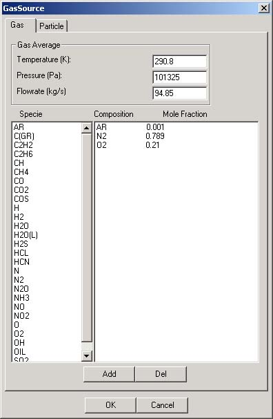
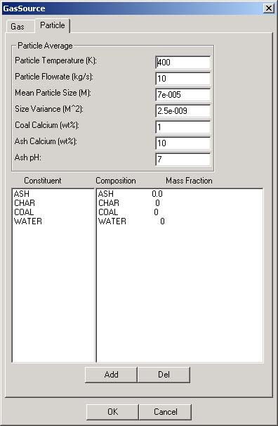

|  | User Interface-GasThis first tab of the User Interface allows the user to specify the necessary temperature, pressure, and flowrate of the gas source. To specify gas composition first select a gas from the lower section and select add . Once the gas appears on the right side its molar fraction within the gas mixture can be specified (as a decimal) by clicking on the specie under the Composition column. The data is then stored when the user presses the OK button.
|
|  | User Interface-ParticleThis second page of the User Interface prompts the user for information regarding particles within the gas stream. As with gases, particle properties such as temperature, flowrate, and particle size are assigned above while composition is specified below. |